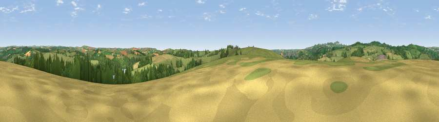

Viewpoint near Golant
#17517 in England · top 34% of its area beats it · near GolantThe view, rendered

A 360° render of this exact spot computed from the terrain model, tree cover and land cover — summer colours, afternoon light, calibrated against photographs of famous viewpoints. Real trees, hedges and buildings will differ in detail.
The panorama
Grey silhouette: terrain skyline in each direction (720 bearings, Earth curvature and refraction included). Dashed green: skyline with trees (+15 m) and buildings (+8 m) as obstacles. Blue strip: how far the ground is visible on each bearing.
Where the view opens
Wedge length = distance to the farthest visible ground on that bearing (vegetation-aware). Rings at 10, 25 and 50 km.
What fills the view
56% grassland · 27% woodland · 12% cropland · 4% water ·
Angular shares of the visible panorama (visual magnitude), not map area. Landscape diversity 0.48 (0–1 Shannon).
Key numbers
More beautiful places nearby
The staircase of upgrades: each row has a higher view potential than everything closer. Driving times are estimates from straight-line distance, calibrated against real road routing — check an actual route before setting out.
| Place | Direction | Drive | Score |
|---|---|---|---|
| Castle Dore Hill | SSW · 1 km | ~3 min | 66.2 |
| Viewpoint near Lanlivery | WNW · 3 km | ~7 min | 70.1 |
| Viewpoint near Lanlivery | WNW · 4 km | ~9 min | 71.9 |
| Viewpoint near Lanlivery | NNW · 5 km | ~10 min | 72.0 |
| Viewpoint near Polruan | SSE · 6 km | ~13 min | 73.1 |
| Viewpoint near Polruan | SE · 6 km | ~13 min | 79.4 |
| Pencarrow Head | SE · 7 km | ~14 min | 86.0 |
| Viewpoint near Stenalees | W · 11 km | ~20 min | 88.0 |
50.37584, -4.66329 · source: screening · position refined by local search. Computed location — check access rights before visiting.